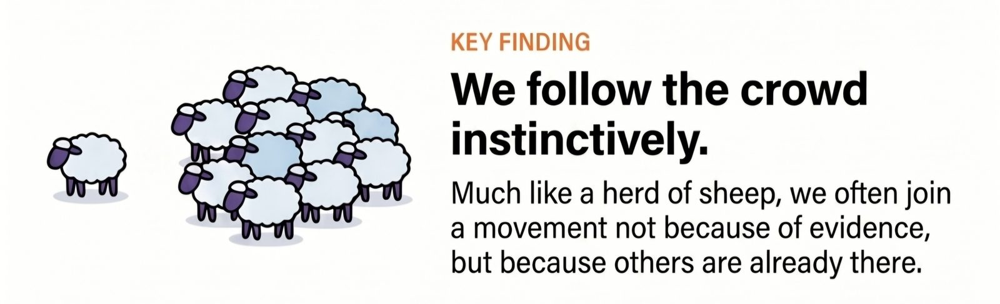
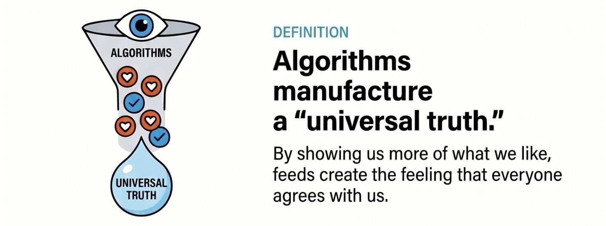
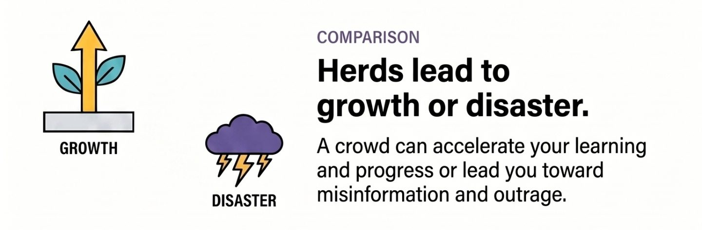
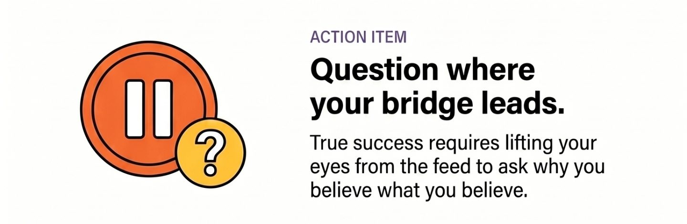

A shepherd doesn't need to convince every sheep to cross. He only needs to force one sheep onto the bridge. The rest will follow.
The same behavior appears in another story. A sheep reaches the top of a hill and falls off the other side. One follows. Then another. Soon the entire herd follows the same path, regardless of where it leads.
The herd is powerful. It can lead to safety, food, and survival. It can also lead to disaster.
Humans like to think we are different.
Yet in the Information Age, we may be more susceptible to the bandwagon effect than ever before.

A few clicks on Instagram, Facebook, YouTube, or X are enough to signal our interests. The algorithms respond by showing us more of the same. We watch one video, then ten similar videos. We like a post, and our feed fills with people who think the same way. Before long, it feels as if everyone agrees.
The illusion is subtle.
We don't merely see content; we begin to see consensus.
When thousands of posts, reels, and comments repeat the same message, it starts to feel like truth. Not because we examined the evidence, but because we encountered the same idea repeatedly.

The danger is not that algorithms show us things we like. The danger is that they quietly reduce the diversity of viewpoints we encounter. We stop exploring and start following. We become members of a digital herd without realizing it.
But being part of a herd is not always bad.
A group of people learning, building, exercising, reading, innovating, or helping each other can pull us toward growth. The right crowd can elevate our thinking and accelerate our progress.

The question is not whether we belong to a herd.
Is it a community moving toward knowledge, curiosity, and improvement? Or is it a crowd marching confidently toward misinformation, outrage, and division?
The challenge today is not finding information. Information is everywhere.
The challenge is occasionally lifting our eyes from the feed and looking around.

Who are we following?
Why do we believe what we believe?
What opinions have we accepted simply because they were popular in our corner of the internet?
The sheep on the bridge rarely question where the bridge leads. Humans have that privilege.
The ability to pause, look around, and choose our direction may be the most valuable skill in an age where everyone is encouraged to follow.
Because success and failure often begin the same way: by following the crowd.
The difference lies in where the crowd is headed.